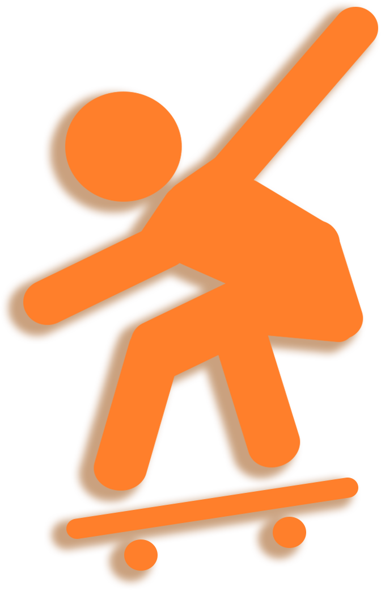

<!DOCTYPE html>

<html lang="en" dir="ltr">
  <head>
    <meta charset="utf-8" />
    <title>Central park interaction</title>
    <link rel="stylesheet" href="style.css" />
  </head>
  <link
    href="https://fonts.googleapis.com/css2?family=Commissioner:wght@100;200;300;400;500;600;700;800;900&display=swap"
    rel="stylesheet"
  />

  <link rel="stylesheet" href="https://www.w3schools.com/w3css/4/w3.css">
</html>

<body>


<!-- <center><p class="Direction">Direction Interaction</p></center> -->
  <!--map area-->
  

 <!--flying skater -->
 <div class="flier"></div>
 <div class="flier2"></div>


 <!--information-->
<div class="containerone">
<div class="house">
  <br/>
  <br/>

  <ul class="nav">
    <li><a href="/index.html">Infor</a></li>
    <li><a href="/design.html">Design</a></li>
    
  </ul>
  <br/>

<p class="headlinefirst"><span class="skatercircle">Skater's circle </span>
<br/>
is the perfect place for teenagers and adults
to play skateboard or scooters after school and
after work on every sunny afternoon.
</p>

<!--<span class="skatepark"> </span>-->

<span class="skateparkpic">
<div class="w3-content w3-section" style="max-width:600px">

  
  
  
 
</div>

<script>
var myIndex = 0;
carousel();

function carousel() {
  var i;
  var x = document.getElementsByClassName("mySlides");
  for (i = 0; i < x.length; i++) {
    x[i].style.display = "none";  
  }
  myIndex++;
  if (myIndex > x.length) {myIndex = 1}    
  x[myIndex-1].style.display = "block";  
  setTimeout(carousel, 9000);    
}
</script>
</span>

<iframe src="https://www.google.com/maps/embed?pb=!1m18!1m12!1m3!1d1836.4873734775636!2d-73.97411218449848!3d40.7722180187152!2m3!1f0!2f0!3f0!3m2!1i1024!2i768!4f13.1!3m3!1m2!1s0x89c258f2c06bab6f%3A0xcd6b52b967ea0a0d!2sSkater&#39;s%20Circle!5e0!3m2!1sen!2sus!4v1635197338296!5m2!1sen!2sus" width="600" height="450" style="border:0;" allowfullscreen="" loading="lazy"></iframe>

<p class="how">Here is my goals</p>
<!--description for project-->

<p class="introduction">Few activities are more popular than 
  skateboarding during New York City's quarantine. 
  Last year, from February to June, the purchase of skateboarding 
  equipment almost doubled. In crowded and small New York City, 
  it's hard to find spacious and safe places to skateboard with friends and family.
  Skater's circle is located in the heart of the sprawling Central Park, 
  this place is hardly noticeable. My plan is to make <a href="/design.html"><span class="direction">series of
  direction</span></a> here to help people who interested in skateboarding can find it.

</p>

<p class="goal">additionality</p>

<!--text bubble -->
<div class="goals">
  <a href="/design.html"><span class="direction">These series of
    direction</span></a> were made to allow people who share 
  the same hobby to play and socialize together.
   It’s funny to have more people doing skateboard together, 
  and people who need the place to do skateboard can make friends over there. 
  Next time when they go to this place to skate, they can go there together. 
</div>


</div>
</div>


<br/>
<br/>
<br/>


</body>
